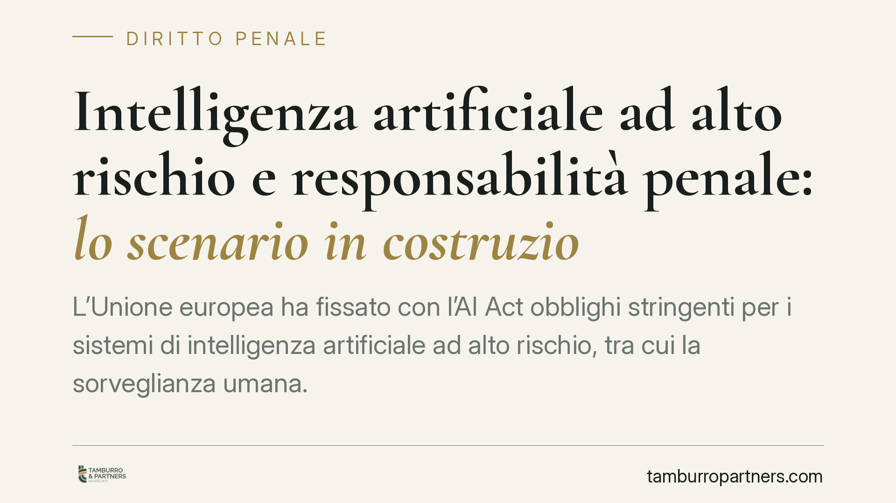

Intelligenza artificiale ad alto rischio e responsabilità penale: lo scenario in costruzione
L'Unione europea ha fissato con l'AI Act obblighi stringenti per i sistemi di intelligenza artificiale ad alto rischio, tra cui la sorveglianza umana. Si discute ora, a livello nazionale, di presìdi penali per chi ometta misure di sicurezza o manometta tali sistemi. Per imprese e pubbliche amministrazioni è il momento di verificare la conformità e la catena delle responsabilità interne.

Il quadro di riferimento: l'AI Act europeo
Il Regolamento (UE) 2024/1689, noto come AI Act, è la prima disciplina organica europea sull'intelligenza artificiale. Classifica i sistemi per livello di rischio e impone obblighi particolarmente rigorosi per quelli cosiddetti ad alto rischio: sistemi impiegati, ad esempio, in ambito sanitario, nella gestione di infrastrutture critiche, nella selezione del personale o nell'amministrazione della giustizia.
Tra gli obblighi centrali vi è la sorveglianza umana (*human oversight*): il sistema non può operare in piena autonomia su decisioni che incidono sui diritti delle persone. Deve essere previsto un presidio umano capace di comprendere il funzionamento del sistema, interpretarne gli esiti e, soprattutto, interromperne l'operatività quando necessario. È un principio che sposta il baricentro dalla fiducia cieca nell'automazione al controllo consapevole.
Un avvertimento sulle fonti
Si registrano, nel dibattito pubblico e in alcune ricostruzioni giornalistiche, riferimenti a specifiche fattispecie penali di nuova introduzione — in particolare a un presunto nuovo articolo del codice penale e a decreti attuativi con numerazione precisa — che non risultano ad oggi verificabili nelle fonti ufficiali (Gazzetta Ufficiale, Normattiva).
Per rigore deontologico trattiamo questi elementi come prospettici: l'adeguamento nazionale all'AI Act è in corso e potrà introdurre presìdi sanzionatori, ma numerazioni, cornici edittali e date di entrata in vigore vanno confermati sulle fonti primarie prima di qualunque affidamento. In questa sede ci limitiamo quindi alla cornice certa — il Regolamento europeo — e alla logica che un eventuale intervento penale potrebbe seguire.
La logica di un possibile reato di pericolo
Se il legislatore nazionale introdurrà una fattispecie penale a tutela della sicurezza dei sistemi di IA ad alto rischio, è ragionevole attendersi una struttura analoga a quella dell'art. 437 c.p., che punisce l'omissione o la rimozione dolosa di cautele contro gli infortuni sul lavoro.
Si tratterebbe, cioè, di un reato di pericolo: la condotta rilevante non è il danno già verificatosi, ma l'esposizione a un rischio. Omettere le misure di sorveglianza umana o manomettere i meccanismi di controllo diventerebbe penalmente rilevante a prescindere dall'evento lesivo. È una tecnica normativa che anticipa la tutela e responsabilizza chi gestisce il sistema.
Il piano civile va tenuto distinto
Va evitata una confusione frequente. Il profilo penale (eventuali reati) è cosa diversa dal profilo civilistico della responsabilità per danni. Sul versante risarcitorio, l'alleggerimento dell'onere probatorio a favore del danneggiato discende da iniziative europee dedicate alla responsabilità da IA, con una propria base normativa autonoma. I due piani non vanno sovrapposti: un'impresa può essere esposta sul fronte risarcitorio anche in assenza di responsabilità penale, e viceversa.
La responsabilità degli enti
Un punto merita attenzione a prescindere dall'esito del percorso normativo: l'eventuale introduzione di reati legati all'IA ad alto rischio apre il tema della responsabilità degli enti ex D.lgs. 231/2001.
Se la nuova fattispecie fosse inserita tra i reati presupposto, l'impresa o la pubblica amministrazione potrebbe rispondere in proprio — con sanzioni pecuniarie e interdittive — per fatti commessi nel suo interesse o a suo vantaggio, salva l'adozione ed efficace attuazione di un idoneo modello organizzativo. È la ragione per cui conviene integrare per tempo il presidio IA nell'architettura 231 esistente.
Implicazioni pratiche
Per fornitori, produttori, importatori, distributori e utilizzatori professionali il messaggio è chiaro: la conformità all'AI Act non è un adempimento formale. La documentazione tecnica, la tracciabilità delle decisioni e la designazione di presìdi umani competenti diventano elementi di protezione, prima ancora che obblighi.
Cosa fare in concreto
- Mappare i sistemi di IA in uso e classificarli secondo i criteri di rischio dell'AI Act, identificando quelli ad alto rischio.
- Documentare le misure di sorveglianza umana: chi controlla, con quali competenze, con quale potere di intervento e disattivazione.
- Verificare l'adeguatezza del modello organizzativo 231, valutando l'inserimento del rischio IA tra le aree sensibili.
- Presidiare la catena di fornitura: clausole contrattuali chiare su ruoli e responsabilità tra fornitore, importatore, distributore e utilizzatore.
- Assicurare la tracciabilità dei log e delle decisioni automatizzate, per poter ricostruire a posteriori il funzionamento del sistema.
È opportuno avviare per tempo una verifica di conformità, monitorando l'evoluzione normativa nazionale sulle fonti ufficiali.
Disclaimer
Contributo informativo a cura di Tamburro & Partners — Avv. Giuseppe Tamburro. Non costituisce parere legale.
Ogni condominio ha una storia a sé.
Se gestisci un'amministrazione e vuoi un confronto su una specifica questione condominiale, scrivi allo studio. Ti rispondiamo entro un giorno lavorativo.